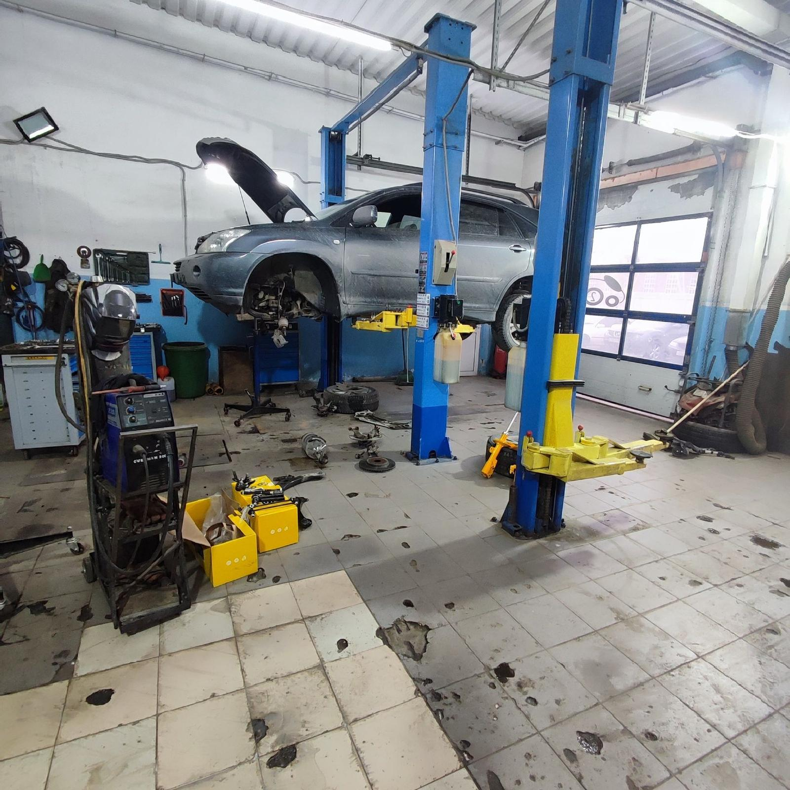
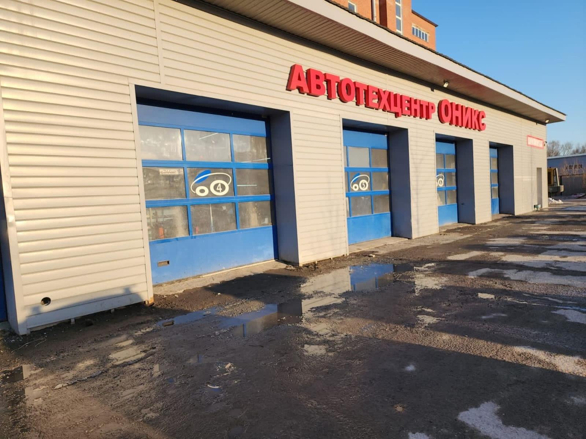

Смотрим и замеряем
Компьютерная диагностика, замер компрессии, эндоскоп внутрь цилиндров. Всё, что можно измерить, измеряем, а не предполагаем.
Петухова, 69/3 в Кировском районе. 598 отзывов, и в доброй половине — про то, что причину нашли мы, а не те, кто смотрел до нас. Работаем каждый день, свой склад запчастей на месте.

Замер компрессии и эндоскоп — не «доплата за диагностику», а то, после чего разговор о ремонте становится предметным. Вы своими глазами видите состояние цилиндров на экране прибора.
Компьютерная диагностика, замер компрессии, эндоскоп внутрь цилиндров. Всё, что можно измерить, измеряем, а не предполагаем.
«Всё рассказал, показал на приборе, своими глазами увидел состояние цилиндров» — это отзыв, а не обещание. Дальше решение за вами.
От минимума до максимума — до начала работ. И отдельно говорим, что нужно делать сейчас, а что подождёт до следующего раза.
Бензиновые моторы, инжекторы, топливная и выхлопная системы, охлаждение. От расходников до серьёзного ремонта.
Подвеска, рулевые рейки, проточка тормозных дисков, развал-схождение на стенде. К нам приезжают переделывать после других.
Ремонт механических коробок, сцепление, приводы. Стартеры и генераторы — отдельным направлением.
Ремонт электронных систем, автосигнализации, аккумуляторы, диагностика проводки.
Заправка и ремонт кондиционера, поиск утечек, обслуживание климатической системы.
Подвеска, тормозная и топливная системы, электрика, стёкла, расходники — на месте, не надо возить с рынка.
Список из карточки 2ГИС. Вашей марки нет в списке — позвоните, скорее всего возьмёмся.

В редких отзывах нас справедливо ругают за одно и то же: работа затянулась, а мы не позвонили и не предупредили. Это наш реальный слабый пункт, и мы держим его на контроле — если срок съезжает, звоним сами.
Мы не прячем такие отзывы и не просим их удалять. Читайте карточку целиком: 598 оценок — это шесть лет ежедневной работы, а не рекламный бюджет.
Не могу поверить своему счастью. Бились с проблемой 2 года. На этой СТО ребята определили и устранили проблему в два счёта. Просто волшебники!
Отдельное спасибо мастеру Алексею за проведение диагностики: всё рассказал, показал на приборе, своими глазами увидел состояние цилиндров. Тут реально решают проблему.
Уже 3-й раз у них обслуживаюсь, все 3 раза обозначили все цены от минимума до максимума, не обманывают, всё делают чётко, говорят о проблемах на будущее. Приятные администраторы.
Ребята помогли, нашли причину поломки, которую не смогли найти 2 СТО до этого, огромное спасибо.
